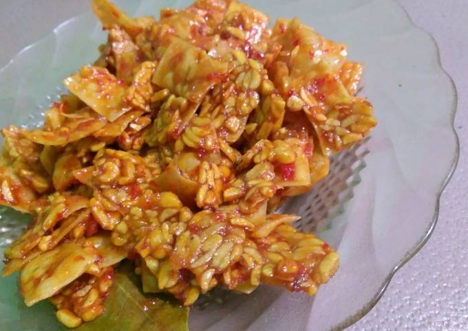

Kering Tempe Pangsit

Bahan-bahan
- 1/2 papan tempe (250 gr)
- 15 lembar kulit pangsit (150 gr)
- 4 siung bawang putih (15 gr)
- 8 siung bawang merah (20 gr)
- 1 biji cabe merah besar
- 3 biji cabe keriting merah (opsional)
- 3 biji cabe rawit kecil (opsional)
- 1 sdm gula merah, sisir
- 5 cm lengkuas
- 2 lembar daun salam
- 2-3 sdm kecap manis (sesuai selera)
- gula, garam, kaldu bubuk seperlunya
Cara membuat
- Potong segi empat tempe dan kulit pangsit kecil-kecil. Lalu goreng secara terpisah tempe dan kulit pangsit. Sisihkan.
- Haluskan bawang putih, bawang merah, cabe,lengkuas, gula merah
- Tumis bumbu halus dan tambahkan daun salam, kecap manis, gula pasir, garam, kaldu bubuk. Tambahkan air sedikit bila perlu tapi pastikan air menyusut terlebih dahulu. Lalu koreksi rasa sesuai selera
- Dengan api kecil, masukkan tempet yang sudah digoreng. Aduk merata dengan bumbu secara cepat.
- Matikan api. Masukkan kulit pangsit.
- Letakkan kering tempe kulit pangsit dalam toples dan tutup.